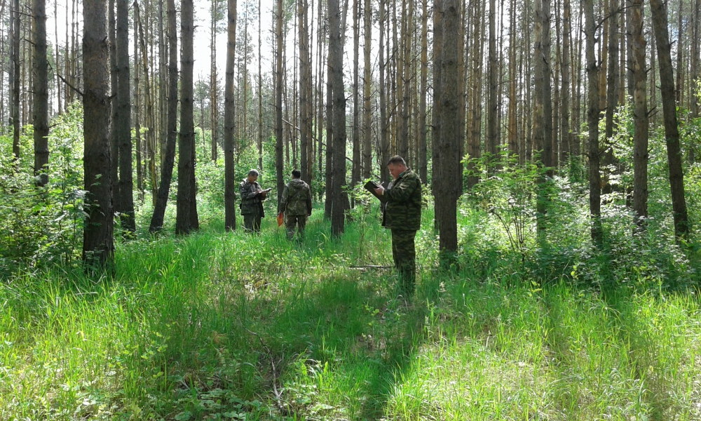
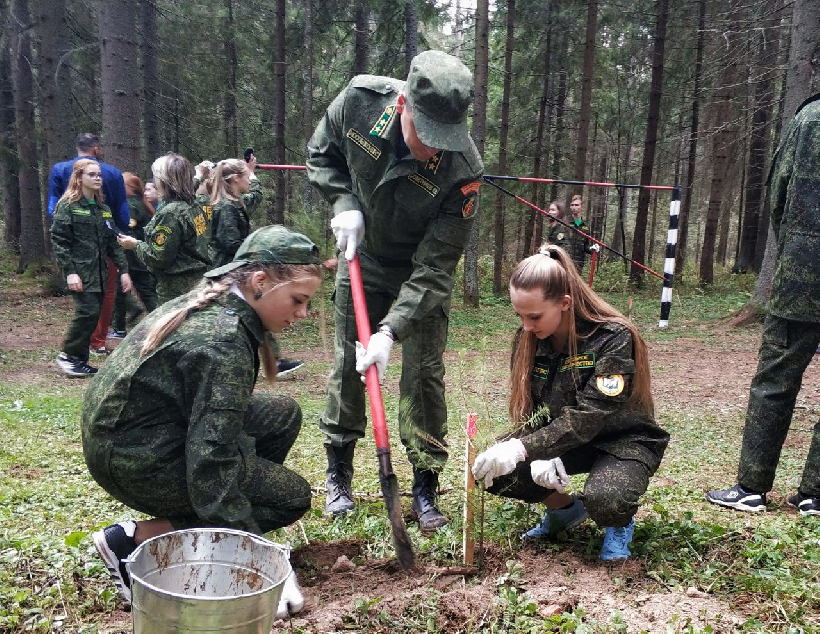

Лесни́чество — основная территориальная единица управления в области использования, охраны, защиты и воспроизводства лесов в России. Лесничества делятся на участковые лесничества.
 
В результате изменения законодательства Российской Федерации (с вступлением в силу нового Лесного кодекса — ЛК РФ) произошли изменения и в терминологии. Лесное законодательство, действующее до введения ЛК РФ, рассматривало лесничество в качестве основного структурного подразделения лесхоза.
Одновременно лесничество считалось территорией определенной площади, которая могла составлять от нескольких тысяч до нескольких десятков тысяч гектаров.
Таким образом, до издания ЛК РФ лесничество и лесопарк характеризовались лесным законодательством неоднозначно. При этом важным фактором выступало то, что тогда ключевое значение при регулировании придавалось не столько лесничествам, сколько лесхозам.
В лесохозяйственной литературе лесхоз определялся как организационно-хозяйственная единица в системе федерального органа исполнительной власти в области лесного хозяйства, находящаяся на самостоятельном балансе.
В законодательстве лесхоз всегда определялся как юридическое лицо, организационно-правовые формы которого изменялись на разных исторических этапах развития нашей страны. Лесхоз был государственным предприятием, территориальным органом федерального органа управления лесным хозяйством и федеральным государственным учреждением.
Вместе с тем всегда оставалось неизменным то, что лесхоз наряду с управленческой деятельностью осуществляет и хозяйственные мероприятия.
В условиях рыночной экономики совмещение в одном юридическом лице, находящемся в статусе федерального государственного учреждения, двух взаимоисключающих функций не соответствует той общественно-хозяйственной роли, которую государство отводило лесхозам. Не получили достойного развития такие основные формы экономического стимулирования производства и повышения доходности лесов, как арендные отношения и лесные аукционы, и наоборот, чисто лесоводственные мероприятия, связанные с уходом за лесом в целях улучшения его качественных характеристик (повышения прироста насаждений, увеличения доли ценных древесных пород в составе покрытых лесной растительностью земель), а также своевременное проведение профилактических санитарных мероприятий, постепенно переросли в ранг только коммерческой деятельности, зачастую не имеющей никакого научно-лесоводственного обоснования.
Сформированные до введения в действие ЛК РФ лесничества, как правило, стали современными участковыми лесничествами, сохраняя при этом нумерацию квартальной сети.